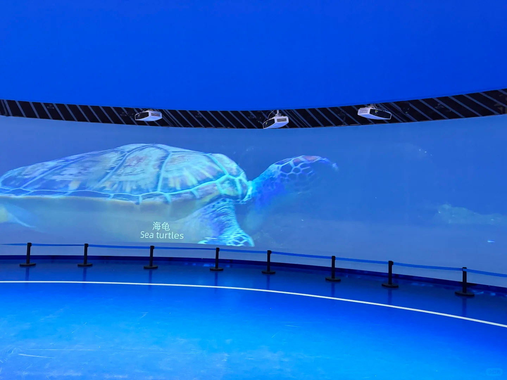
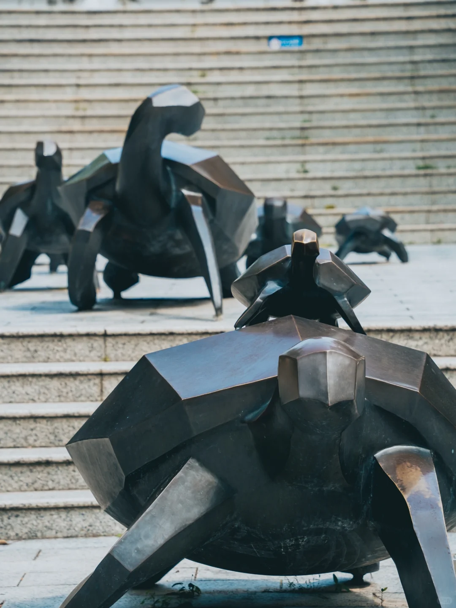
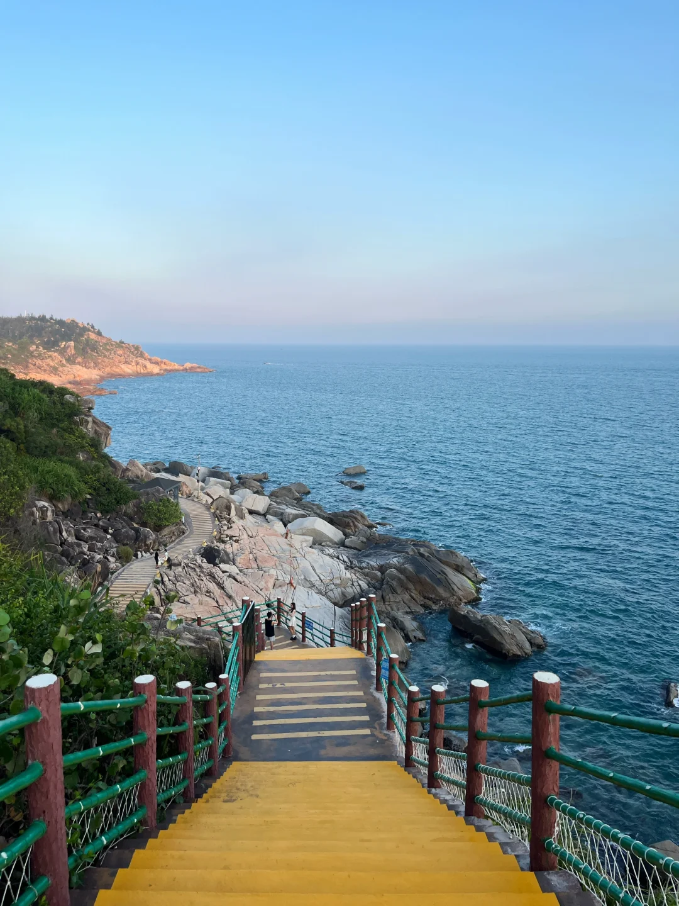
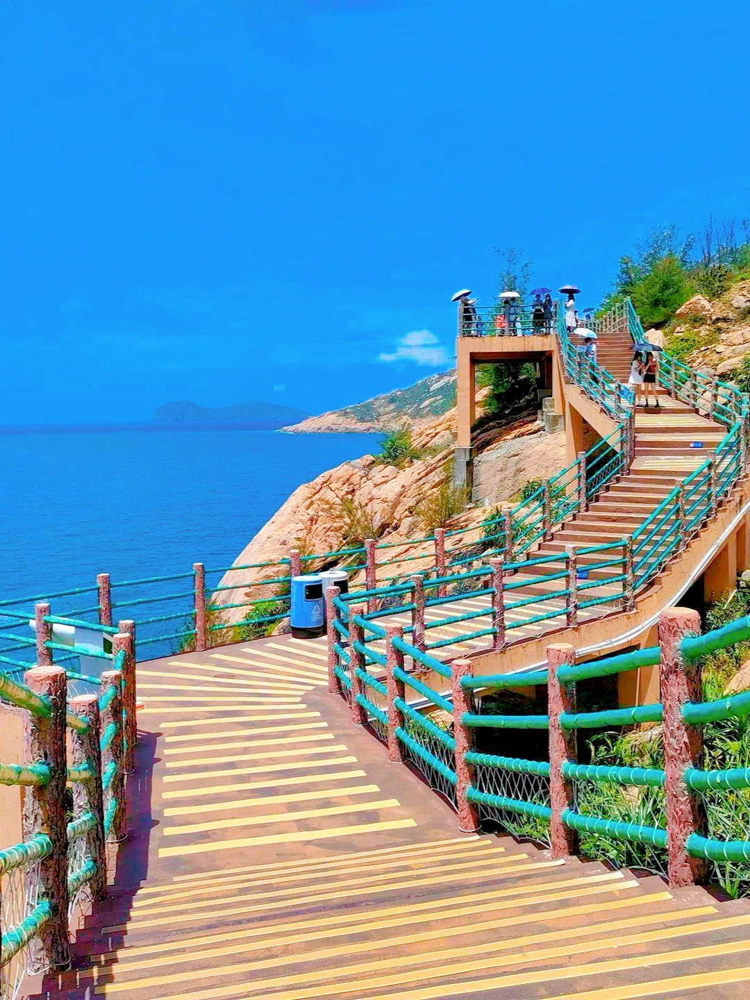
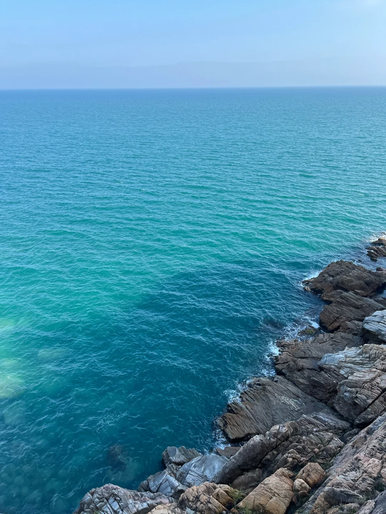

保护区深度游（核心）
本次旅行的绝对主角。先讲清身份，再列内部景点、官方动线与入园实操，周边景点统一放到后面「景点卡片」作顺游备选。
🐢 海龟湾 ＝ 保护区的核心
广东惠东海龟国家级自然保护区位于惠东县港口滨海旅游度假区最南端的大星山南麓（稔平半岛最南端），由陆地（约 2 km²）+ 海域（约 716 km²）+ 外围保护带组成。核心区的月牙形海滩正是绿海龟的产卵地，自古被称为「海龟湾」——所以「海龟湾」是当地人对这片保护区的俗称，二者同一处。
- 中国大陆 1.8 万公里海岸线上唯一的绿海龟按期成批洄游产卵场所，亚洲大陆架唯一的国家级海龟保护区。
- 1985 年始建、1992 年晋升国家级、2002 年列入《国际重要湿地名录》（拉姆萨尔公约）。
- 截至近年累计保护海龟产卵 740+ 窝、孵出小龟 6.8 万+ 只、放流 6.4 万+ 只；并攻克海龟全人工繁殖（2017 年国内首例 91 只出壳）。
⚠️ 能「看绿海龟成批洄游产卵」吗？—— 预期管理
绿海龟繁殖季为 每年 6–10 月、高峰 7–8 月，你定的 8 月正好在季节里；但雌龟只在夜晚上岸（约 22:00–次日 03:00）产卵，而保护区为护龟实行严格限流：游客白天入园、夜间封闭，产卵核心沙滩不对游客开放，繁殖季 19:00–04:00 由工作人员值守。因此现场看不到夜间上岸产卵的过程。
8 月你能真正看到的：
- 驯养中心 / 海龟馆：现存养护海龟 2000+ 只，含百岁 1.5m 巨龟、人工繁殖稚龟——"看海龟"的主战场。
- 科普馆：完整讲交配周期、温度决定性别、约 60 天孵化、野外存活率仅 1‰、人工繁育成活率 90%。
- 幼龟放流科普活动：卵约 50–60 天孵化，7–8 月产的蛋 9–10 月才出壳放流，8 月基本赶不上；可现场/公众号问当月是否有活动。
- 线上"产卵直播"：部分年份保护区繁殖季有产卵监控直播（官方标注"观看直播"），留意公众号——这是唯一"看产卵"的合法窗口。
- 会仙桥栈道偶遇：小概率外海偶遇野生海龟浮出水面，属彩蛋非必看。
一句话：8 月来能看到"海龟本身 + 完整科普 + 人工繁育成果"，看不到"夜间沙滩产卵现场"——这恰是保护区保护到位的表现。

科普馆
沉浸式海洋科普馆：海龟标本 + 大型投影，仿佛置身海底与海龟零距离；两层结构，约 10:00 有工作人员投食表演，是亲子必看的第一站。



会仙桥 · 观海栈道
全长 600 余米的临海木栈道，依山傍海、蜿蜒于峭壁礁石之上，是观海绝佳点，也被称为「广东小垦丁」。晴天每帧都是壁纸，注意穿防滑鞋。



驯养中心 · 海龟馆
集科研、救护、科普于一体，既是海龟救助中心也是仿生态驯养基地。两层水族箱里海龟悠游，可近距离观察庞然大物；约 10:00 投食时段最热闹。
观海亭 · 瞭望台
登亭远眺，大星山南麓半月形海湾与礁石尽收眼底，是官方动线上的观景点，也是俯拍海龟湾的机位。海风阵阵，听涛最佳。
灵龟广场 · 杜鹃登陆地
入口处的灵龟广场与「杜鹃登陆地」标识，纪念绿海龟洄游上岸产卵的生命轨迹，是动线起点与科普打卡点。
产卵场 · 观龟长廊
核心区的月牙形沙滩即「海龟湾」本湾，属保护核心，白天沙滩不对外开放，可于观龟长廊远观；繁殖季（6–10 月）夜间母龟上岸产卵，幼龟放流为科普活动（非每日开放，关注公众号）。
🗺️ 官方推荐内部动线（约 3 小时）
游客中心 → 灵龟广场 → 杜鹃登陆地 → 观海亭瞭望台 → 凉亭 → 会仙桥（观海栈道）→ 驯养中心（海龟馆）→ 出口
建议 8:30 一开园即入，人少景净、光线柔；先逛科普馆与海龟馆（约 10:00 投食），再走会仙桥栈道，最后乘观光车回出口。全程有坡道与台阶，带娃可乘观光车省力。
🎫 入园实操（必看）
- 预约：关注公众号「惠州海龟湾」提前预约登记，每日限流 1500 人；节假日车位也需预约。
- 购票：门票仅限当天线上购买、不退不提前售；成人 ¥30。
- 优待：学生 / 60–70 岁 半价；1.2m 以下或 6 岁以下、70 岁以上、军官、导游、记者、残疾人 免。
- 开放：5/1–10/31 8:30–17:30；11/1–4/30 8:30–17:00（停入）。
- 观光车：单程 ¥10/人（现金），回程约 2 分钟；步行至出口约 20 分钟。
- 停车：¥10/辆，不限时。
- 最佳：6–9 月繁殖旺季；海龟馆约 10:00 投食。
- 礼仪：禁用闪光灯，不投喂、不触碰海龟；栈道穿防滑鞋。